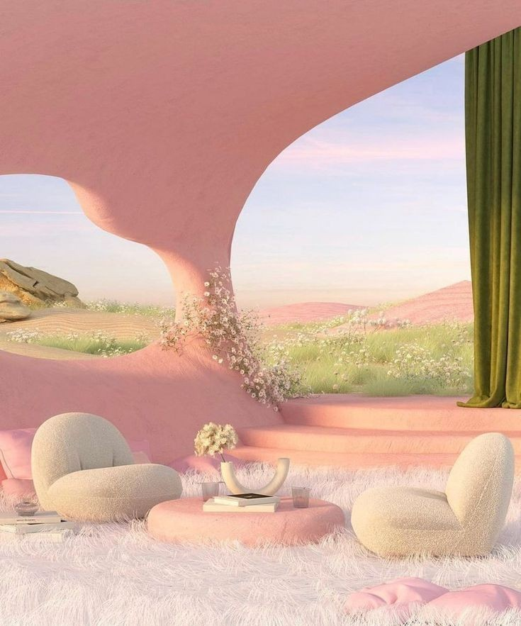

Today's nourishment
Today's menu
Morning Grain Porridge with Stone Fruit
Slow-cooked oat and millet with roasted seasonal stone fruit, blossom honey, and toasted seed clusters.
Root Vegetable Broth with Herb Oil
Parsnip, carrot, and celeriac stock finished with cold-pressed herb oil and thin rye crackers.
Pressed Legume and Greens Plate
White bean and lentil preparation with bitter greens, pickled radish, and mustard-seed vinaigrette.
Dark Rye and Cultured Spread
Thick-cut dark rye with a smoked walnut and fermented cream spread at the self-serve station.
